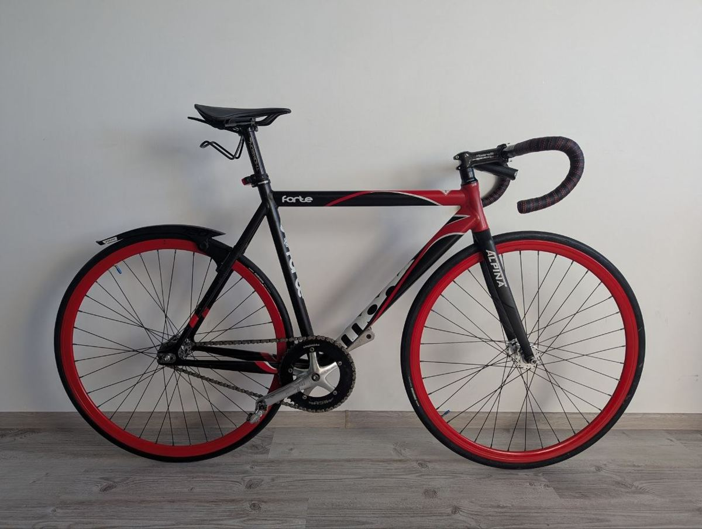
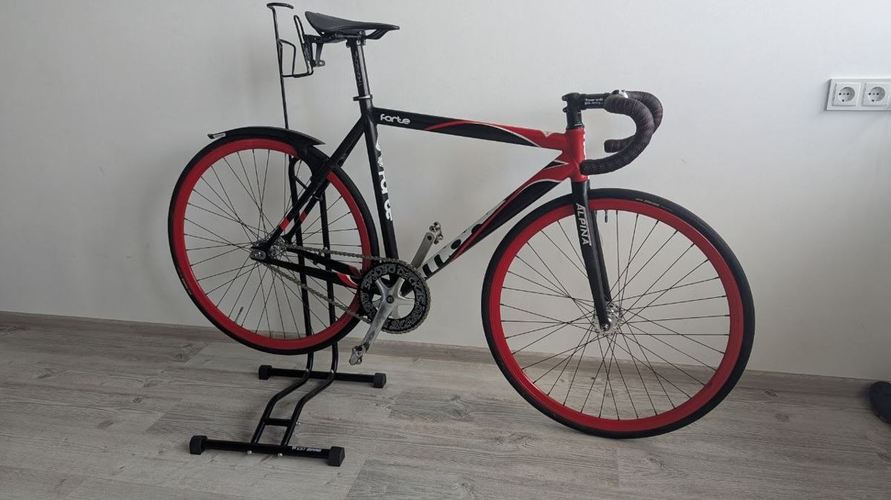
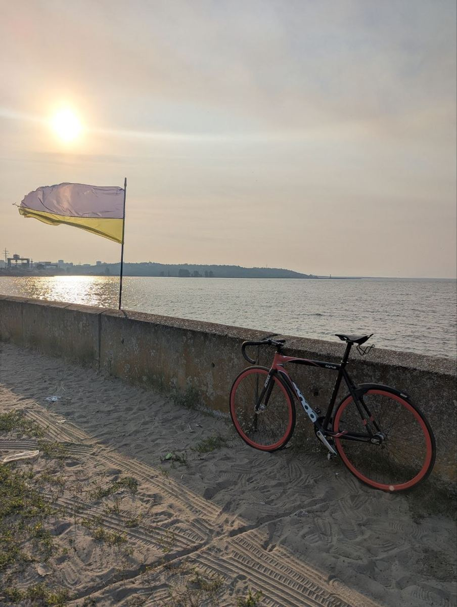
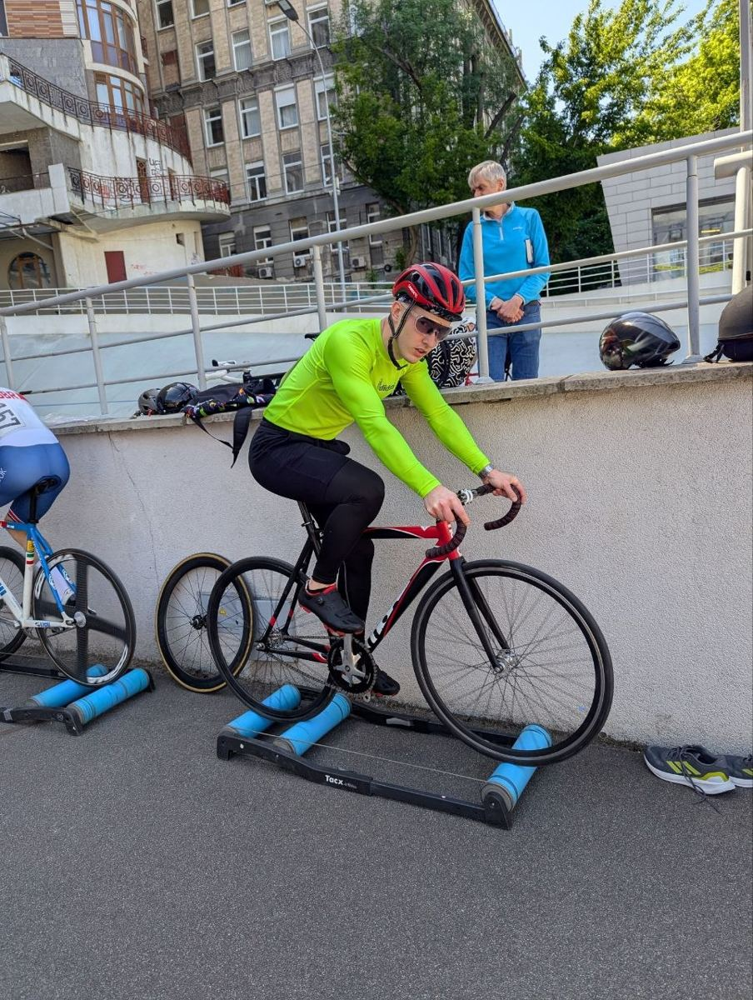
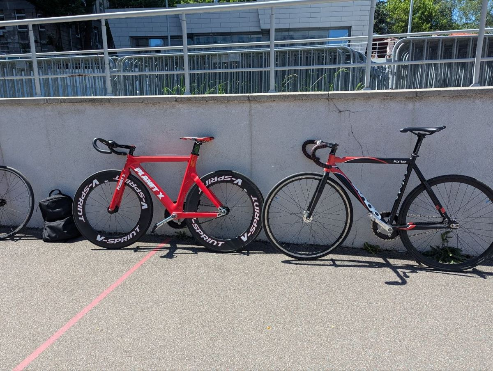
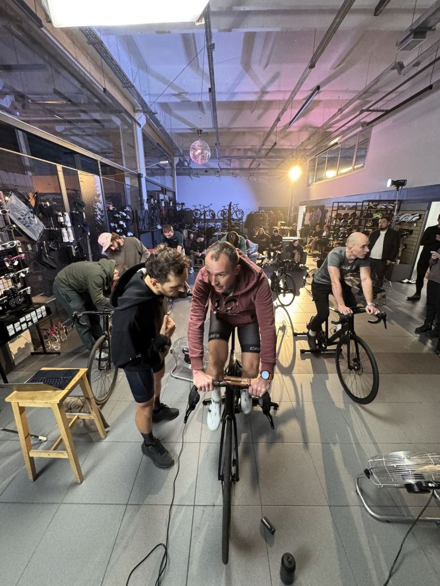
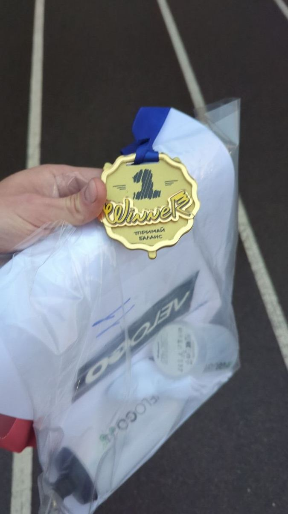
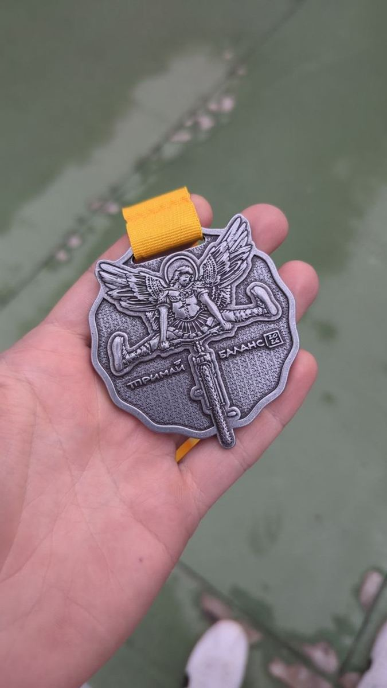

Про велосипед
Мій нинішній велосипед зібраний на рамі Moda Forte — чорно-червоній, з агресивною трековою геометрією. Спереду стоїть вилка Alpina, система (шатуни із зіркою) — Stronglight. Кермо — баранець з чорно-червоною обмоткою, обода — червоні, у тон рамі.
Передача 52/15: на передній зірці 52 зуби, на задній — 15. Це досить «важка» передача — вона дає змогу розганятися до 64 км/год, але вимагає сили в ногах на старті та в підйоми.
Гальм на велосипеді немає зовсім, і в цьому його сила. Швидкість регулюю ногами: сповільнююсь, притримуючи педалі, а різко зупиняюсь скідом — блокуванням заднього колеса. Велосипед легкий, простий в обслуговуванні і завжди готовий до поїздки.
На ньому я їжджу щодня: на роботу містом, на вечірні покатушки дорогою на Вишгород і на старти. На цьому ж велосипеді я виграв категорію «фікс» на «Київській сотці 2026» і розминався перед виступом на київському велотреку. Обслуговування зводиться до простого: чистий і змащений ланцюг, правильний натяг, накачані колеса. Жодних перемикачів, тросиків і колодок, які треба налаштовувати. Саме за це я й люблю фікс: велосипед не відволікає від дороги, а все, що потрібно, — це сила в ногах і уважність. У галереї нижче — мій велосипед удома, на покатушках, на велотреку і медалі, які ми з ним виграли.
Як навчитися гальмувати без гальм — читайте в порадах
Галерея
-

Moda Forte, вилка Alpina, система Stronglight -

Вдома на стійці -

Вечірня покатушка біля води -

Розминка на станку на київському велотреку -

Поруч із трековим Planet X -

Вечірні заїзди на станках з велоспільнотою -

Медаль за 1 місце в категорії «фікс» -

Медаль учасника «Тримай баланс»
Компоненти
| Деталь | Що стоїть |
|---|---|
| Рама | Moda Forte |
| Вилка | Alpina |
| Система | Stronglight |
| Зірки | 52 / 15 (передаточне число ≈ 3,47) |
| Гальма | немає |
| Кермо | баранець, чорно-червона обмотка |
| Колеса | 700c, червоні обода |
| Максимальна швидкість | 64 км/год |